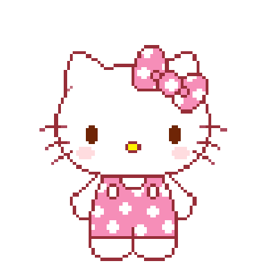
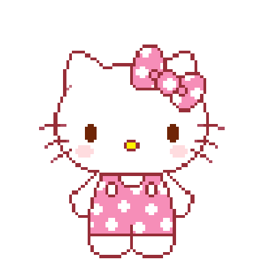

여기에는 큰 눈, 큰 머리, 둥그런 신체,
통통한 몸 , 부드러운 털이나 피부,
, 부드러운 털이나 피부,
짧고 뭉툭한 주둥이등이 포함된다.
귀여움이
무기다.
영국 과학잡지 [How It Works]
인간은 포유류 새끼들이 공통적으로
가진 외양적 특징을 목격하면 본능적으로
‘귀여움’을 느낀다. 이러한 외모 특징을
[유아도해] (baby schema/幼兒圖解)
라고 일컫는다.
{1}
{2}
여기에는 큰 눈, 큰 머리, 둥그런 신체,
통통한 몸, 부드러운 털이나 피부,
짧고 뭉툭한 주둥이등이 포함된다.
아기 스키마가 높으면 상대방 으로부터
보호 및 부양 행동을 촉진시키는 반면에
공격성은 낮추는 것으로 잘 알려져 있다.
일정 시간 동안 어미의 보호 없이는 살 수 없는
포유류나 조류는 양육 행동을 불러 일으키는
모습으로 태어남으로써 어렸을 때에 어미나
개체군의 다른 성체로부터 보호를 받게 된다.
{1}
캐릭터 분야가 대표적이다.
러버덕미키마우스곰돌이 푸 라이언
라이언 헬로키티피카추
헬로키티피카추 푸린
푸린 햄토리
햄토리 별의 커비
별의 커비 등, 귀여움은 곧 경쟁력이다.
등, 귀여움은 곧 경쟁력이다.
국내 캐릭터 산업 시장은 8조원대 규모까지 성장했다. 이순종 서울대 미대학장은 "완만한 선, 부드럽고 통통한 느낌은 보는 사람에게 친밀감과 따뜻함을 전해준다"며 "귀여움을 극대화하는 것이 캐릭터 산업의 전략"이라고 했다.
는 만화가들 책상에
"귀여움을 유지하라 Keep it cute!"라는 메모를 붙여뒀다.
{2}
전중환 교수는 귀여움이 주는 즐거움은 맛있는 음식이나
며 "귀여움은 인간의 판단력을 무장해제시킬 만큼
강력하기 때문에 대중문화가 이를 이용하는 측면도 있다"고 했다.
{3}
디어드리 배릿 하버드대 교수도 저서 '우리는 왜 위험한 자극에
끌리는가(2010)'에서 귀여움을 섹스·식욕·복수심리 등과 함께
{4}
그는 인간은 이런 자극에 매우 취약하기 때문에
자본이나 국가권력이 이를 활용하는 경향이
있다고 지적한다. 배릿 교수는
그래서
애교(愛嬌) : 귀여운 아기목소리, 얼굴 표정, 몸짓 등을 통해 애정을 표현하는 행동.
한 유튜브 영상에서는 국내 아이돌의 애교
영상을 본 외국인들의 반응을 보여주었다.
연출자가 “본인 국가에도 ‘애교’라는 개념이
있어요?”라고 묻자 애교 문화의 부재를 밝혔다.
본격적으로 아이돌의 애교 영상을 시청했을 때,
대부분은 당혹스러움을 감추지 못했다. 심지어
테이블을 엎어버리고 싶다며 과격한 반응을
하기도 하며 다양한 반응을 보였다.
한 방송에서 캐나다 출신 외국인 연예인 0000
씨는 한국에 와서 가장 적응되지 않았던 문화가
애교라고 말했다. 애교는 아기들만 하는 것이라
고 언급해 문화 차이를 체감할 수 있다.
영어권 나라에는 애교라는 개념 자체가
존재하지 않는다. 따라서 애교를 뜻하는
영단어도 없다. 외국인들은 이를 대체할
단어가 없어 [Aegyo]라고 표기한다.
서양에서는 ‘귀엽다’라는 개념이 아기나
동물에게만 사용되기 때문이다. 그래서
카와이나 귀여움은 매력어필보단
밈의 개념으로 활용된다.
*
위 이미지들은 제작자의 정치적
견해와 관련 없음을 밝힙니다.
팝메탈 밴드 <레이디베이비>의 보는 것만으로도 힘이 되어버리는.
호주에서 온 치유계 아저씨로 소개되어 있는 '레이디비어드'씨.
"노래를 부르는 동안 최대한 사랑스럽게 보이려고 노력하죠."
라 말했다. 이 호주에서 온 수염 사나이가 파괴적인 외모와 극강의
귀여움 사이에 만든 혼돈의 우주안에 당신의 영혼을 가둘 것이다.
/허핑턴포스트코리아
반면, 일본은 우리나라처럼 애교가 많은 나라로 알려져 있는데 대표적으로 카와이나, 부릿코 등 애교를 뜻하는 명확한 단어가 있다. 일본은 연예인뿐만 아니라 일반인들의 말투에서도 쉽게 애교 문화를 찾아볼 수 있다. 다만 애교가 우리나라에서보다 더 여성에게만 국한되는 사회적 분위기가 존재한다.
빈칸에 공통적으로 알맞은 말을 넣어보시오.(3점)
나 ____버거 먹고 시퍼요.
나 ____ 대따 조아하는거 알지?
나눈 ____ 두쟝~♡
정답(클릭)
빈칸에 공통적으로 알맞은 말을 넣어보시오.(3점)
근데에~
나는 귀여운척 하는게 아니라~
그냥 귀엽게 ________!
정답(클릭)
봐주셔서 감사합니다.
귀여운 하루 되세요.
귀여움이 무기다 (Baby Schema)는
2020년도 서울과학기술대학교 UX디자인심화
프로젝트 및 과제전 작품으로 개인 창작물 입니다.
사용된 이미지의 저작권은 각 저작자에게 있습니다.